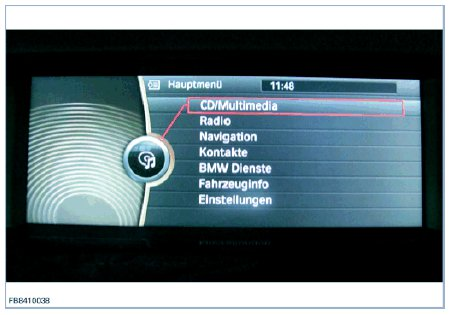
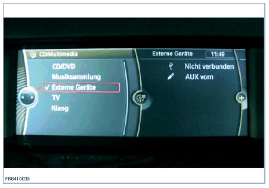
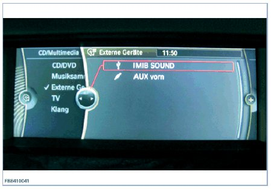
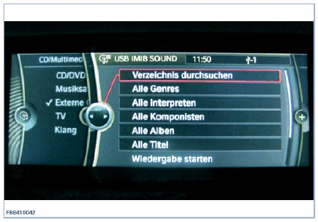
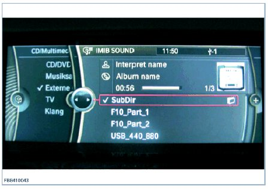

Functional Description, Integrated USB Test
Functional Description, Integrated USB Test
USB test for USB interface
The Integrated Measurement Interface Box (IMIB) makes it possible to test the USB ports in the vehicle. Two tests are available. The load test is an electrical test of the USB interface, whereby only the vehicle-side voltage supply and the current level of the USB port are tested. With the media test, various media files are made available via USB and can be played back in the vehicle. A procedure is available in the diagnosis system ISTA for the USB test, which can be carried out via the Integrated Service Information Display (ISID).
NOTE: It is necessary to connect the IMIB to an ISID via the network in order to carry out the USB test. The results of the USB tests are included in the diagnosis report. The testing of other USB components (PC, data carriers, accessories etc.) is not permitted and could cause permanent damage to the IMIB. The tested USB port is only fully functional if both tests are successfully completed. If one of the two tests is not performed successfully, a vehicle diagnosis must be carried out with the ISTA and the wiring and plug connections checked against the wiring diagram, Warranty-related invoicing can only take place after a full diagnosis has taken place.
In order to carry out the USB tests successfully, the following general conditions must be taken into consideration.
- Latest software and updates installed on the IMIB.
- Battery charger connected.
- Ignition turned on.
- Connect USB cable to IMIB (do not connect USB cable to vehicle yet.)
NOTE: Only perform the USB tests with the USB cable provided in the scope of delivery of the IMIB. Always perform USB tests directly at the USB connection of the vehicle. Do not use extension cables, USB hubs etc.
The examples listed in the description only relate to testing on BMW vehicles. The system behaves identically for vehicles of the type MINI or Rolls-Royce.
The USB test must be carried out in accordance with the instructions contained in the testing procedure.
Media test
After successful connection to an ISID, the IMIB makes various media files available via USB.
Select CD/Multimedia in the menu at the vehicle via the controller.

Then select External Devices.

Then follow the instructions in the testing procedure. The test takes approx. 2 minutes and cannot be interrupted.
If connection to the vehicle was successful, the following graphic is displayed during the media test. The IMIB is displayed on the display of the vehicle as a connected device under the name IMIB SOUND.

IMIB SOUND must be selected via the controller in order to display and play the music files. Check volume control in vehicle. A total of 3 media files and a sub-directory (SUBDIR) with contents are offered. To find the subdirectory, select IMIB SOUND and then select Browse directories. In vehicle with a Combox, album cover information is displayed in the form of a graphic as well as the media descriptions (genre, album and track).


The media test takes about 2 minutes to complete. Progress of the test is shown in the testing procedure. It must also be possible to play the music files in the vehicle within those 2 minutes. Pay attention to the volume setting in the vehicle when doing this.
NOTE: On completion of the test, data exchange between vehicle and IMIB is terminated automatically. The IMIB is no longer shown on the display of the vehicle as IMIB SOUND.
The load test is carried out after the media test. Follow the instructions in the testing procedure.
Possible fault patterns during the load test
The USB port voltage is too low.
Troubleshooting:
- Check USB cable connection between IMIB and vehicle.
- Check lines and plug connections in vehicle.
- Check the USB connection.
- Check control unit.
- Check fuse F26.
Load current was not reached at the USB port.
Troubleshooting:
- Check USB cable connection between IMIB and vehicle (use spare cable from another IMIB if necessary).
- The customer may have attached a USB hub (distributor) to the vehicle USB connection. Always run the USB test directly on the USB connection in the vehicle.
- Check the USB connection.
- Check lines and plug connections in vehicle.
- Check control unit.
We can assume no liability for printing errors or inaccuracies in this document and reserve the right to introduce technical modifications at any time.